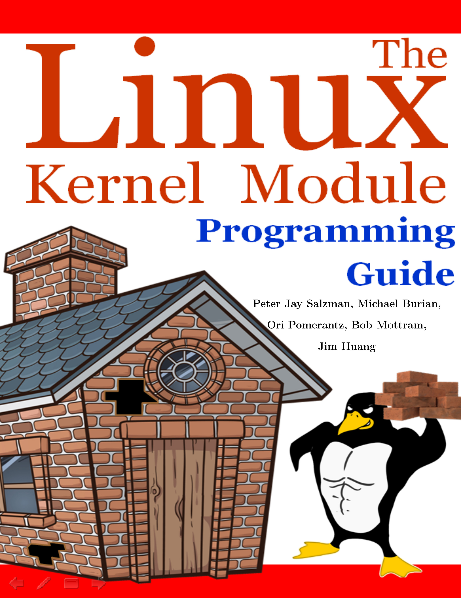
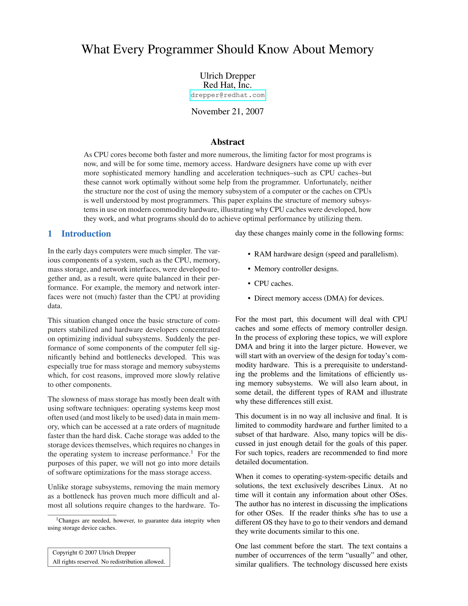

This page serves as a personal archive of my reading list. It began as a carefully crafted bottom-up sequence in order to achieve Linux kernel contributor-level proficiency, but eventually became a medium of realizing the greater purpose and joy of learning.
Being a recovering completionist, it strictly features literature that I have read comprehensively (appendices and other sections included). If you can help it, don't do this to yourself. Technical books are a special kind of fun, and I sincerely hope this page helps seekers make more educated book purchasing decisions.
Happy reading!
The Linux Kernel Module Programming Guide
Peter Jay Salzman, et al.

Super practical, if not a bit dodgy - you can judge a book by it's cover. The setup guide alone is completely shot, so I've made a GitHub repository for a more friendly setup/to track my progress.
There's a sense of immediate gratification that keeps you hooked, and overall, it's a quick read. Distinctly requires the context of this book series up into this point; the C knowledge without question, but it's also nice to have a mental render of what might be going on a few floors down. Preferred this as a next step over the more heady Linux Kernel Development by Robert Love, but I still mean to get to that as well.
If you're comfortable hacking together a solution when the book veers into errors, I'd highly recommend it.
What Every Programmer Should Know About Memory
Ulrich Drepper

The ubiquitous whitepaper by the dreaded Drepper. Elegantly ties computer science concepts to physical reality in ways that many other writers struggle to accomplish. Doesn't make the common mistake of assuming the reader is inept. Occasionally shows it's age based on it's description of "the current landscape" but the foundational knowledge remains applicable and will for years to come. Simple, clean, and famous for a reason.
Operating Systems: Three Easy Pieces
Remzi H. Arpaci-Dusseau & Andrew C. Arpaci-Dusseau

The best book on operating systems. I did not appreciate the condescending humor and assumptions of what constitutes an "astute" reader.
Data Structures in C: First Edition
Noel Kalicharan

A fine primer that I wouldn't personally recommend.
Contains a handful of excellent expositions on essential data structures, poor examples, and an overwhelming amount of sub-par exercises. Second edition might be improved but I wouldn't count on it; ordered the first edition on accident.
Still very much worth the read for my purposes (going from near zero awareness to toy implementations).
The C Programming Language: Second Edition
Brian W. Kernighan & Dennis M. Ritchie

The best technical book ever written, on the best programming language ever designed, by the best technical writer of all time.
Programming from the Ground Up
Jonathan Bartlett

Assembly by a brother in the Faith. Super friendly and free!
Inside The Machine: An Illustrated Introdution to Microprocessors and Computer Architecture
Jon Stokes

The self-proclaimed natural follow-up to Code. Zooms out ever so slightly to provide a much more detailed overview of core CPU functionality and how it interfaces with other hardware. I don't think there's a viable alternative to the topic without diving into an otherwise dense undergraduate-level textbook.
But How Do It Know?
J. Clark Scott

An excellent complement to Code. The chapter entitled "Philosophy" is wonderful and incredibly relevant.
Code: The Hidden Language of Computer Hardware and Software: Second Edition
Charles Petzold

The book that started this whole thing. Provides vital historical context and reignited my passion for computers.